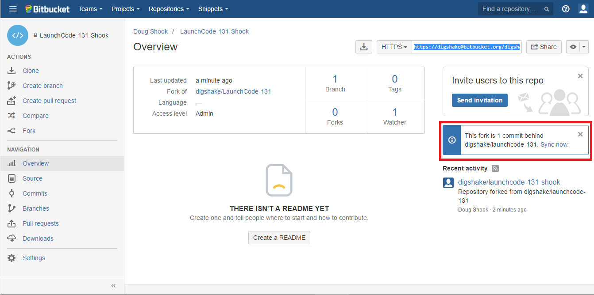
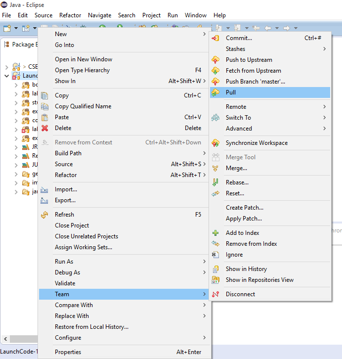
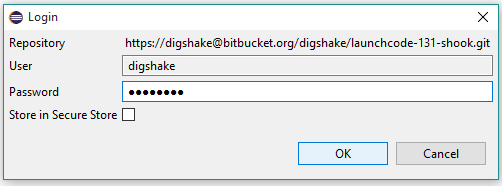

Prep 6: Module 6
- Before you begin
- Module Overview
- Module Introduction
- Explicit Recursion
- Exercise: Recursive Factorial and Sum
- Exercise: Recursive Factorial and Sum
- Finding Recursive Substructure
- Exercise: Recursion and Base Cases
- Roundtable: Method Execution using the Debugger
- Example: Generating graph paper
- Exercise: Generating graph paper
- Substitution Model
- Roundtable: Substitution practice: factorial
- Roundtable: Tracing Recursion
- Roundtable: More tracing recursion
- Conclusion
Before you begin
Before you can begin on the exercises, studio, and assignment for this module, you must update your project to recieve the code. To do this, do the following:
-
Go to the BitBucket website. Find the page for your repository. On the right side you should see a message indicating that your repository is behind. Click sync now.
If you do not see this message, then you did not fork your repository correctly. Go back to the prep work for module 0, and create a new fork for your repository.

-
Open Eclipse, find your project. Right click the name of your project and go to
Team -> Pull.
-
On the window that pops up, enter your BitBucket password and click OK. You should now have the materials you need for module 4.

You will need to do this at the beginning of each module as we add more materials to the course.
Module Overview
Module Introduction
Explicit Recursion
Exercise: Recursive Factorial and Sum
Part 1: Introduction
Part 2: Demonstration of the debugger using factorial
Part 3: The Exercise
-
In the
exercises6package of theexercisessource folder, create-
Sum.javaas a Java class -
SumTest.javaas a JUnit test file
-
-
Complete both so that sum is computed as defined by the explicitly recursive formula:
-
sum(n) = sum(n-1) + n, if n > 0
-
sum(n) = 0, otherwise
-
-
Write some tests for sum and run the unit test file to make sure your function works.
Remember that you have to have a @Test directive above any
unit test method, as shown in the video.
Part 4: Solution
Exercise: Recursive Factorial and Sum
Part 1: The Exercise
-
In the
exercises6package of theexercisessource folder, complete the-
Add.java -
addTest.java
-
-
Complete both so that addition is computed as defined by the explicitly recursive formula:
- add(x,y) = x, if y = 0
- add(x,y) = add(x+1,y-1), otherwise
-
Write some more tests for add and run the unit test file to make sure your function works.
Remember that you have to have a @Test directive above any
unit test method, as shown in the video.
-
Under what conditions on x and y does your method operate correctly?
-
How could you complete the
addAll(x,y)method so it works for anyxandy?
See the code, as a hint is given there.
Part 2: The Solution
Finding Recursive Substructure
Exercise: Recursion and Base Cases
Part 1: Introduction
Part 2: The exercise
Part 1
In the video, one possible explanation for human reproduction was given, namely that a woman is born with all of the babies already inside her that she would ever deliver. This idea is attributed to Anton von Leeuwenhoek who, as a lensmaker, greatly advanced the use of microscopes in studying biology. In terms of recursion and base cases, what is wrong with von Leeuwenhoek’s speculation?
Part 2
-
In the
exercises6package of theexercisessource folder, find and open theFactorialNoBaseCaseclass. -
Run the class as a Java Application.
-
What happens, and why?
Part 3: Solution
Roundtable: Method Execution using the Debugger
Part 1
Part 2
Part 3
Part 4
Part 5
Part 6
Part 7
Example: Generating graph paper
Exercise: Generating graph paper
Part 1: Introduction
Part 2: The exercise
-
In the
exercises6package of theexercisessource folder, find and open theGraphPaperclass. -
Complete the class so that it produces a grid on the screen
-
Think about the recursive substructure of drawing a grid
-
Think about the base case(s)